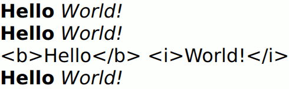

TextEdit QML Type
Displays multiple lines of editable formatted text. More...
| Import Statement: | import QtQuick |
| Inherits: |
Properties
- activeFocusOnPress : bool
- baseUrl : url
- bottomPadding : real
- canPaste : bool
- canRedo : bool
- canUndo : bool
- color : color
- contentHeight : real
- contentWidth : real
- cursorDelegate : Component
- cursorPosition : int
- cursorRectangle : rectangle
- cursorSelection : QtQuick::TextSelection
(preliminary) - cursorVisible : bool
- effectiveHorizontalAlignment : enumeration
- font.bold : bool
- font.capitalization : enumeration
- font.family : string
- font.features : object
(since 6.6) - font.hintingPreference : enumeration
- font.italic : bool
- font.kerning : bool
- font.letterSpacing : real
- font.pixelSize : int
- font.pointSize : real
- font.preferShaping : bool
- font.strikeout : bool
- font.styleName : string
- font.underline : bool
- font.variableAxes : object
(since 6.7) - font.weight : int
- font.wordSpacing : real
- horizontalAlignment : enumeration
- hoveredLink : string
- inputMethodComposing : bool
- inputMethodHints : enumeration
- leftPadding : real
- length : int
- lineCount : int
- mouseSelectionMode : enumeration
- overwriteMode : bool
- padding : real
- persistentSelection : bool
- preeditText : string
- readOnly : bool
- renderType : enumeration
- rightPadding : real
- selectByKeyboard : bool
- selectByMouse : bool
- selectedText : string
- selectedTextColor : color
- selectionColor : color
- selectionEnd : int
- selectionStart : int
- tabStopDistance : real
- text : string
- textDocument : TextDocument
- textFormat : enumeration
- textMargin : real
- topPadding : real
- verticalAlignment : enumeration
- wrapMode : enumeration
Signals
- editingFinished()
- linkActivated(string link)
- linkHovered(string link)
Methods
- void append(string text)
- clear()
- copy()
- cut()
- deselect()
- string getFormattedText(int start, int end)
- string getText(int start, int end)
- insert(int position, string text)
- isRightToLeft(int start, int end)
- linkAt(real x, real y)
- moveCursorSelection(int position, SelectionMode mode)
- paste()
- int positionAt(int x, int y)
- rectangle positionToRectangle(position)
- redo()
- string remove(int start, int end)
- select(int start, int end)
- selectAll()
- selectWord()
- undo()
Detailed Description
The TextEdit item displays a block of editable, formatted text.
It can display both plain and rich text. For example:
TextEdit { width: 240 text: "<b>Hello</b> <i>World!</i>" font.family: "Helvetica" font.pointSize: 20 color: "blue" focus: true }

Setting focus to true enables the TextEdit item to receive keyboard focus.
Note that the TextEdit does not implement scrolling, following the cursor, or other behaviors specific to a look and feel. For example, to add flickable scrolling that follows the cursor:
Flickable { id: flick width: 300; height: 200; contentWidth: edit.contentWidth contentHeight: edit.contentHeight clip: true function ensureVisible(r) { if (contentX >= r.x) contentX = r.x; else if (contentX+width <= r.x+r.width) contentX = r.x+r.width-width; if (contentY >= r.y) contentY = r.y; else if (contentY+height <= r.y+r.height) contentY = r.y+r.height-height; } TextEdit { id: edit width: flick.width focus: true wrapMode: TextEdit.Wrap onCursorRectangleChanged: flick.ensureVisible(cursorRectangle) } }
A particular look and feel might use smooth scrolling (eg. using SmoothedAnimation), might have a visible scrollbar, or a scrollbar that fades in to show location, etc.
Clipboard support is provided by the cut(), copy(), and paste() functions. Text can be selected by mouse in the usual way, unless selectByMouse is set to false; and by keyboard with the Shift+arrow key combinations, unless selectByKeyboard is set to false. To select text programmatically, you can set the selectionStart and selectionEnd properties, or use selectAll() or selectWord().
You can translate between cursor positions (characters from the start of the document) and pixel points using positionAt() and positionToRectangle().
Property Documentation
effectiveHorizontalAlignment : enumeration |
horizontalAlignment : enumeration |
verticalAlignment : enumeration |
Sets the horizontal and vertical alignment of the text within the TextEdit item's width and height. By default, the text alignment follows the natural alignment of the text, for example text that is read from left to right will be aligned to the left.
Valid values for horizontalAlignment are:
| Constant | Description |
|---|---|
TextEdit.AlignLeft | left alignment with ragged edges on the right (default) |
TextEdit.AlignRight | align each line to the right with ragged edges on the left |
TextEdit.AlignHCenter | align each line to the center |
TextEdit.AlignJustify | align each line to both right and left, spreading out words as necessary |
Valid values for verticalAlignment are:
| Constant | Description |
|---|---|
TextEdit.AlignTop | start at the top of the item (default) |
TextEdit.AlignBottom | align the last line to the bottom and other lines above |
TextEdit.AlignVCenter | align the center vertically |
When using the attached property LayoutMirroring::enabled to mirror application layouts, the horizontal alignment of text will also be mirrored. However, the property horizontalAlignment will remain unchanged. To query the effective horizontal alignment of TextEdit, use the read-only property effectiveHorizontalAlignment.
These properties hold the padding around the content. This space is reserved in addition to the contentWidth and contentHeight.
activeFocusOnPress : bool |
Whether the TextEdit should gain active focus on a mouse press. By default this is set to true.
baseUrl : url |
This property specifies a base URL which is used to resolve relative URLs within the text.
The default value is the url of the QML file instantiating the TextEdit item.
canPaste : bool |
canRedo : bool |
canUndo : bool |
Returns true if the TextEdit is writable and there are previous operations that can be undone.
color : color |
contentHeight : real |
Returns the height of the text, including the height past the height that is covered if the text does not fit within the set height.
contentWidth : real |
Returns the width of the text, including the width past the width which is covered due to insufficient wrapping if wrapMode is set.
cursorDelegate : Component |
The delegate for the cursor in the TextEdit.
If you set a cursorDelegate for a TextEdit, this delegate will be used for drawing the cursor instead of the standard cursor. An instance of the delegate will be created and managed by the text edit when a cursor is needed, and the x and y properties of delegate instance will be set so as to be one pixel before the top left of the current character.
Note that the root item of the delegate component must be a QQuickItem or QQuickItem derived item.
cursorPosition : int |
The position of the cursor in the TextEdit. The cursor is positioned between characters.
Note: The characters in this case refer to the string of QChar objects, therefore 16-bit Unicode characters, and the position is considered an index into this string. This does not necessarily correspond to individual graphemes in the writing system, as a single grapheme may be represented by multiple Unicode characters, such as in the case of surrogate pairs, linguistic ligatures or diacritics.
cursorRectangle : rectangle |
The rectangle where the standard text cursor is rendered within the text edit. Read-only.
The position and height of a custom cursorDelegate are updated to follow the cursorRectangle automatically when it changes. The width of the delegate is unaffected by changes in the cursor rectangle.
cursorSelection : QtQuick::TextSelection |
This property is under development and is subject to change.
This property is an object that provides properties of the text that is currently selected, if any, alongside the text cursor.
This property was introduced in Qt 6.7.
See also selectedText, selectionStart, and selectionEnd.
cursorVisible : bool |
If true the text edit shows a cursor.
This property is set and unset when the text edit gets active focus, but it can also be set directly (useful, for example, if a KeyProxy might forward keys to it).
font.bold : bool |
Sets whether the font weight is bold.
font.capitalization : enumeration |
Sets the capitalization for the text.
| Constant | Description |
|---|---|
Font.MixedCase | no capitalization change is applied |
Font.AllUppercase | alters the text to be rendered in all uppercase type |
Font.AllLowercase | alters the text to be rendered in all lowercase type |
Font.SmallCaps | alters the text to be rendered in small-caps type |
Font.Capitalize | alters the text to be rendered with the first character of each word as an uppercase characterTextEdit { text: "Hello"; font.capitalization: Font.AllLowercase } |
font.family : string |
Sets the family name of the font.
The family name is case insensitive and may optionally include a foundry name, e.g. "Helvetica [Cronyx]". If the family is available from more than one foundry and the foundry isn't specified, an arbitrary foundry is chosen. If the family isn't available a family will be set using the font matching algorithm.
font.features : object |
Applies integer values to specific OpenType features when shaping the text based on the contents in features. This provides advanced access to the font shaping process, and can be used to support font features that are otherwise not covered in the API.
The font features are represented by a map from four-letter tags to integer values. This integer value passed along with the tag in most cases represents a boolean value: A zero value means the feature is disabled, and a non-zero value means it is enabled. For certain font features, however, it may have other interpretations. For example, when applied to the salt feature, the value is an index that specifies the stylistic alternative to use.
For example, the frac font feature will convert diagonal fractions separated with a slash (such as 1/2) with a different representation. Typically this will involve baking the full fraction into a single character width (such as ½).
If a font supports the frac feature, then it can be enabled in the shaper as in the following code:
Text { text: "One divided by two is 1/2" font.family: "MyFractionFont" font.features: { "frac": 1 } }
Multiple features can be assigned values in the same mapping. For instance, if you would like to also disable kerning for the font, you can explicitly disable this as follows:
Text { text: "One divided by two is 1/2" font.family: "MyFractionFont" font.features: { "frac": 1, "kern": 0 } }
You can also collect the font properties in an object:
Text {
text: "One divided by two is 1/2"
font: {
family: "MyFractionFont"
features: { "frac": 1, "kern": 0 }
}
}
Note: By default, Qt will enable and disable certain font features based on other font properties. In particular, the kern feature will be enabled/disabled depending on the font.kerning property of the QFont. In addition, all ligature features (liga, clig, dlig, hlig) will be disabled if a font.letterSpacing is set, but only for writing systems where the use of ligature is cosmetic. For writing systems where ligatures are required, the features will remain in their default state. The values set using font.features will override the default behavior. If, for instance, "kern" is set to 1, then kerning will always be enabled, regardless of whether the font.kerning property is set to false. Similarly, if it is set to 0, it will always be disabled.
This property was introduced in Qt 6.6.
See also QFont::setFeature().
font.hintingPreference : enumeration |
Sets the preferred hinting on the text. This is a hint to the underlying text rendering system to use a certain level of hinting, and has varying support across platforms. See the table in the documentation for QFont::HintingPreference for more details.
Note: This property only has an effect when used together with render type TextEdit.NativeRendering.
| Constant | Description |
|---|---|
Font.PreferDefaultHinting | Use the default hinting level for the target platform. |
Font.PreferNoHinting | If possible, render text without hinting the outlines of the glyphs. The text layout will be typographically accurate, using the same metrics as are used e.g. when printing. |
Font.PreferVerticalHinting | If possible, render text with no horizontal hinting, but align glyphs to the pixel grid in the vertical direction. The text will appear crisper on displays where the density is too low to give an accurate rendering of the glyphs. But since the horizontal metrics of the glyphs are unhinted, the text's layout will be scalable to higher density devices (such as printers) without impacting details such as line breaks. |
Font.PreferFullHinting | If possible, render text with hinting in both horizontal and vertical directions. The text will be altered to optimize legibility on the target device, but since the metrics will depend on the target size of the text, the positions of glyphs, line breaks, and other typographical detail will not scale, meaning that a text layout may look different on devices with different pixel densities.TextEdit { text: "Hello"; renderType: TextEdit.NativeRendering; font.hintingPreference: Font.PreferVerticalHinting } |
font.italic : bool |
Sets whether the font has an italic style.
font.kerning : bool |
Enables or disables the kerning OpenType feature when shaping the text. Disabling this may improve performance when creating or changing the text, at the expense of some cosmetic features. The default value is true.
TextEdit { text: "OATS FLAVOUR WAY"; kerning: font.false }
font.letterSpacing : real |
Sets the letter spacing for the font.
Letter spacing changes the default spacing between individual letters in the font. A positive value increases the letter spacing by the corresponding pixels; a negative value decreases the spacing.
font.pixelSize : int |
Sets the font size in pixels.
Using this function makes the font device dependent. Use TextEdit::font.pointSize to set the size of the font in a device independent manner.
font.pointSize : real |
Sets the font size in points. The point size must be greater than zero.
font.preferShaping : bool |
Sometimes, a font will apply complex rules to a set of characters in order to display them correctly. In some writing systems, such as Brahmic scripts, this is required in order for the text to be legible, but in e.g. Latin script, it is merely a cosmetic feature. Setting the preferShaping property to false will disable all such features when they are not required, which will improve performance in most cases.
The default value is true.
TextEdit { text: "Some text"; font.preferShaping: false }
font.strikeout : bool |
Sets whether the font has a strikeout style.
font.styleName : string |
Sets the style name of the font.
The style name is case insensitive. If set, the font will be matched against style name instead of the font properties font.weight, font.bold and font.italic.
font.underline : bool |
Sets whether the text is underlined.
font.variableAxes : object |
Applies floating point values to variable axes in variable fonts.
Variable fonts provide a way to store multiple variations (with different weights, widths or styles) in the same font file. The variations are given as floating point values for a pre-defined set of parameters, called "variable axes". Specific instances are typically given names by the font designer, and, in Qt, these can be selected using setStyleName() just like traditional sub-families.
In some cases, it is also useful to provide arbitrary values for the different axes. For instance, if a font has a Regular and Bold sub-family, you may want a weight in-between these. You could then manually request this by supplying a custom value for the "wght" axis in the font.
Text { text: "Foobar" font.family: "MyVariableFont" font.variableAxes: { "wght": (Font.Normal + Font.Bold) / 2.0 } }
If the "wght" axis is supported by the font and the given value is within its defined range, a font corresponding to the weight 550.0 will be provided.
There are a few standard axes than many fonts provide, such as "wght" (weight), "wdth" (width), "ital" (italic) and "opsz" (optical size). They each have indivdual ranges defined in the font itself. For instance, "wght" may span from 100 to 900 (QFont::Thin to QFont::Black) whereas "ital" can span from 0 to 1 (from not italic to fully italic).
A font may also choose to define custom axes; the only limitation is that the name has to meet the requirements for a QFont::Tag (sequence of four latin-1 characters.)
By default, no variable axes are set.
Note: In order to use variable axes on Windows, the application has to run with either the FreeType or DirectWrite font databases. See the documentation for QGuiApplication::QGuiApplication() for more information on how to select these technologies.
This property was introduced in Qt 6.7.
See also QFont::setVariableAxis().
font.weight : int |
The requested weight of the font. The weight requested must be an integer between 1 and 1000, or one of the predefined values:
| Constant | Description |
|---|---|
Font.Thin | 100 |
Font.ExtraLight | 200 |
Font.Light | 300 |
Font.Normal | 400 (default) |
Font.Medium | 500 |
Font.DemiBold | 600 |
Font.Bold | 700 |
Font.ExtraBold | 800 |
Font.Black | 900TextEdit { text: "Hello"; font.weight: Font.DemiBold } |
font.wordSpacing : real |
Sets the word spacing for the font.
Word spacing changes the default spacing between individual words. A positive value increases the word spacing by a corresponding amount of pixels, while a negative value decreases the inter-word spacing accordingly.
hoveredLink : string |
This property contains the link string when the user hovers a link embedded in the text. The link must be in rich text or HTML format and the link string provides access to the particular link.
See also linkHovered and linkAt().
inputMethodComposing : bool |
This property holds whether the TextEdit has partial text input from an input method.
While it is composing an input method may rely on mouse or key events from the TextEdit to edit or commit the partial text. This property can be used to determine when to disable events handlers that may interfere with the correct operation of an input method.
inputMethodHints : enumeration |
Provides hints to the input method about the expected content of the text edit and how it should operate.
The value is a bit-wise combination of flags or Qt.ImhNone if no hints are set.
Flags that alter behaviour are:
| Constant | Description |
|---|---|
Qt.ImhHiddenText | Characters should be hidden, as is typically used when entering passwords. |
Qt.ImhSensitiveData | Typed text should not be stored by the active input method in any persistent storage like predictive user dictionary. |
Qt.ImhNoAutoUppercase | The input method should not try to automatically switch to upper case when a sentence ends. |
Qt.ImhPreferNumbers | Numbers are preferred (but not required). |
Qt.ImhPreferUppercase | Upper case letters are preferred (but not required). |
Qt.ImhPreferLowercase | Lower case letters are preferred (but not required). |
Qt.ImhNoPredictiveText | Do not use predictive text (i.e. dictionary lookup) while typing. |
Qt.ImhDate | The text editor functions as a date field. |
Qt.ImhTime | The text editor functions as a time field. |
Flags that restrict input (exclusive flags) are:
| Constant | Description |
|---|---|
Qt.ImhDigitsOnly | Only digits are allowed. |
Qt.ImhFormattedNumbersOnly | Only number input is allowed. This includes decimal point and minus sign. |
Qt.ImhUppercaseOnly | Only upper case letter input is allowed. |
Qt.ImhLowercaseOnly | Only lower case letter input is allowed. |
Qt.ImhDialableCharactersOnly | Only characters suitable for phone dialing are allowed. |
Qt.ImhEmailCharactersOnly | Only characters suitable for email addresses are allowed. |
Qt.ImhUrlCharactersOnly | Only characters suitable for URLs are allowed. |
Masks:
| Constant | Description |
|---|---|
Qt.ImhExclusiveInputMask | This mask yields nonzero if any of the exclusive flags are used. |
length : int |
Returns the total number of plain text characters in the TextEdit item.
As this number doesn't include any formatting markup it may not be the same as the length of the string returned by the text property.
This property can be faster than querying the length the text property as it doesn't require any copying or conversion of the TextEdit's internal string data.
mouseSelectionMode : enumeration |
Specifies how text should be selected using a mouse.
| Constant | Description |
|---|---|
TextEdit.SelectCharacters | (default) The selection is updated with individual characters. |
TextEdit.SelectWords | The selection is updated with whole words. |
This property only applies when selectByMouse is true.
overwriteMode : bool |
Whether text entered by the user will overwrite existing text.
As with many text editors, the text editor widget can be configured to insert or overwrite existing text with new text entered by the user.
If this property is true, existing text is overwritten, character-for-character by new text; otherwise, text is inserted at the cursor position, displacing existing text.
By default, this property is false (new text does not overwrite existing text).
persistentSelection : bool |
Whether the TextEdit should keep the selection visible when it loses active focus to another item in the scene. By default this is set to false.
preeditText : string |
This property contains partial text input from an input method.
To turn off partial text that results from predictions, set the Qt.ImhNoPredictiveText flag in inputMethodHints.
See also inputMethodHints.
readOnly : bool |
Whether the user can interact with the TextEdit item. If this property is set to true the text cannot be edited by user interaction.
By default this property is false.
renderType : enumeration |
Override the default rendering type for this component.
Supported render types are:
| Constant | Description |
|---|---|
TextEdit.QtRendering | Text is rendered using a scalable distance field for each glyph. |
TextEdit.NativeRendering | Text is rendered using a platform-specific technique. |
TextEdit.CurveRendering | Text is rendered using a curve rasterizer running directly on the graphics hardware. (Introduced in Qt 6.7.0.) |
Select TextEdit.NativeRendering if you prefer text to look native on the target platform and do not require advanced features such as transformation of the text. Using such features in combination with the NativeRendering render type will lend poor and sometimes pixelated results.
Both TextEdit.QtRendering and TextEdit.CurveRendering are hardware-accelerated techniques. QtRendering is the faster of the two, but uses more memory and will exhibit rendering artifacts at large sizes. CurveRendering should be considered as an alternative in cases where QtRendering does not give good visual results or where reducing graphics memory consumption is a priority.
The default rendering type is determined by QQuickWindow::textRenderType().
selectByKeyboard : bool |
Defaults to true when the editor is editable, and false when read-only.
If true, the user can use the keyboard to select text even if the editor is read-only. If false, the user cannot use the keyboard to select text even if the editor is editable.
See also readOnly.
selectByMouse : bool |
Defaults to true since Qt 6.4.
If true, the user can use the mouse to select text in the usual way.
Note: In versions prior to 6.4, the default was false; but if you enabled this property, you could also select text on a touchscreen by dragging your finger across it. This interfered with flicking when TextEdit was used inside a Flickable. However, Qt has supported text selection handles on mobile platforms, and on embedded platforms using Qt Virtual Keyboard, since version 5.7, via QInputMethod. Most users would be surprised if finger dragging selected text rather than flicking the parent Flickable. Therefore, selectByMouse now really means what it says: if true, you can select text by dragging only with a mouse, whereas the platform is expected to provide selection handles on touchscreens. If this change does not suit your application, you can set selectByMouse to false, or import an older API version (for example import QtQuick 6.3) to revert to the previous behavior. The option to revert behavior by changing the import version will be removed in a later version of Qt.
selectedText : string |
This read-only property provides the text currently selected in the text edit.
It is equivalent to the following snippet, but is faster and easier to use.
//myTextEdit is the id of the TextEdit myTextEdit.text.toString().substring(myTextEdit.selectionStart, myTextEdit.selectionEnd);
selectedTextColor : color |
The selected text color, used in selections.
selectionColor : color |
The text highlight color, used behind selections.
selectionEnd : int |
The cursor position after the last character in the current selection.
This property is read-only. To change the selection, use select(start,end), selectAll(), or selectWord().
See also selectionStart, cursorPosition, and selectedText.
selectionStart : int |
The cursor position before the first character in the current selection.
This property is read-only. To change the selection, use select(start,end), selectAll(), or selectWord().
See also selectionEnd, cursorPosition, and selectedText.
tabStopDistance : real |
The default distance, in device units, between tab stops.
See also QTextOption::setTabStopDistance().
text : string |
The text to display. If the text format is AutoText the text edit will automatically determine whether the text should be treated as rich text. This determination is made using Qt::mightBeRichText(). However, detection of Markdown is not automatic.
The text-property is mostly suitable for setting the initial content and handling modifications to relatively small text content. The append(), insert() and remove() methods provide more fine-grained control and remarkably better performance for modifying especially large rich text content.
Note that some keyboards use a predictive function. In this case, the text being composed by the input method is not part of this property. The part of the text related to the predictions is underlined and stored in the preeditText property.
See also clear(), preeditText, and textFormat.
textDocument : TextDocument |
Returns the QQuickTextDocument of this TextEdit. It can be used to implement syntax highlighting using QSyntaxHighlighter.
See also QQuickTextDocument.
textFormat : enumeration |
The way the text property should be displayed.
Supported text formats are:
| Constant | Description |
|---|---|
TextEdit.PlainText | (default) all styling tags are treated as plain text |
TextEdit.AutoText | detected via the Qt::mightBeRichText() heuristic |
TextEdit.RichText | a subset of HTML 4 |
TextEdit.MarkdownText | CommonMark plus the GitHub extensions for tables and task lists (since 5.14) |
The default is TextEdit.PlainText. If the text format is set to TextEdit.AutoText, the text edit will automatically determine whether the text should be treated as rich text. This determination is made using Qt::mightBeRichText(), which can detect the presence of an HTML tag on the first line of text, but cannot distinguish Markdown from plain text.
Column { TextEdit { font.pointSize: 24 textFormat: TextEdit.AutoText text: "<b>Hello</b> <i>World!</i>" } TextEdit { font.pointSize: 24 textFormat: TextEdit.RichText text: "<b>Hello</b> <i>World!</i>" } TextEdit { font.pointSize: 24 textFormat: TextEdit.PlainText text: "<b>Hello</b> <i>World!</i>" } TextEdit { font.pointSize: 24 textFormat: TextEdit.MarkdownText text: "**Hello** *World!*" } } |  |
With TextEdit.MarkdownText, checkboxes that result from using the GitHub checkbox extension are interactively checkable.
Note: Interactively typing markup or markdown formatting is not supported.
Note: With Text.MarkdownText, and with the supported subset of HTML, some decorative elements are not rendered as they would be in a web browser:
- code blocks use the default monospace font but without a surrounding highlight box
- block quotes are indented, but there is no vertical line alongside the quote
wrapMode : enumeration |
Set this property to wrap the text to the TextEdit item's width. The text will only wrap if an explicit width has been set.
| Constant | Description |
|---|---|
TextEdit.NoWrap | (default) no wrapping will be performed. If the text contains insufficient newlines, implicitWidth will exceed a set width. |
TextEdit.WordWrap | wrapping is done on word boundaries only. If a word is too long, implicitWidth will exceed a set width. |
TextEdit.WrapAnywhere | wrapping is done at any point on a line, even if it occurs in the middle of a word. |
TextEdit.Wrap | if possible, wrapping occurs at a word boundary; otherwise it will occur at the appropriate point on the line, even in the middle of a word. |
The default is TextEdit.NoWrap. If you set a width, consider using TextEdit.Wrap.
Signal Documentation
editingFinished() |
This signal is emitted when the text edit loses focus.
Note: The corresponding handler is onEditingFinished.
linkActivated(string link) |
This signal is emitted when the user clicks on a link embedded in the text. The link must be in rich text or HTML format and the link string provides access to the particular link.
Note: The corresponding handler is onLinkActivated.
linkHovered(string link) |
This signal is emitted when the user hovers a link embedded in the text. The link must be in rich text or HTML format and the link string provides access to the particular link.
Note: The corresponding handler is onLinkHovered.
See also hoveredLink and linkAt().
Method Documentation
void append(string text) |
Appends a new paragraph with text to the end of the TextEdit.
In order to append without inserting a new paragraph, call myTextEdit.insert(myTextEdit.length, text) instead.
clear() |
Clears the contents of the text edit and resets partial text input from an input method.
Use this method instead of setting the text property to an empty string.
See also QInputMethod::reset().
copy() |
Copies the currently selected text to the system clipboard.
cut() |
Moves the currently selected text to the system clipboard.
deselect() |
Removes active text selection.
Returns the section of text that is between the start and end positions.
The returned text will be formatted according the textFormat property.
Returns the section of text that is between the start and end positions.
The returned text does not include any rich text formatting.
Returns true if the natural reading direction of the editor text found between positions start and end is right to left.
Returns the link string at point x, y in content coordinates, or an empty string if no link exists at that point.
See also hoveredLink.
moveCursorSelection(int position, SelectionMode mode) |
Moves the cursor to position and updates the selection according to the optional mode parameter. (To only move the cursor, set the cursorPosition property.)
When this method is called it additionally sets either the selectionStart or the selectionEnd (whichever was at the previous cursor position) to the specified position. This allows you to easily extend and contract the selected text range.
The selection mode specifies whether the selection is updated on a per character or a per word basis. If not specified the selection mode will default to TextEdit.SelectCharacters.
| Constant | Description |
|---|---|
TextEdit.SelectCharacters | Sets either the selectionStart or selectionEnd (whichever was at the previous cursor position) to the specified position. |
TextEdit.SelectWords | Sets the selectionStart and selectionEnd to include all words between the specified position and the previous cursor position. Words partially in the range are included. |
For example, take this sequence of calls:
cursorPosition = 5 moveCursorSelection(9, TextEdit.SelectCharacters) moveCursorSelection(7, TextEdit.SelectCharacters)
This moves the cursor to position 5, extend the selection end from 5 to 9 and then retract the selection end from 9 to 7, leaving the text from position 5 to 7 selected (the 6th and 7th characters).
The same sequence with TextEdit.SelectWords will extend the selection start to a word boundary before or on position 5 and extend the selection end to a word boundary on or past position 9.
paste() |
Replaces the currently selected text by the contents of the system clipboard.
Returns the text position closest to pixel position (x, y).
Position 0 is before the first character, position 1 is after the first character but before the second, and so on until position text.length, which is after all characters.
rectangle positionToRectangle(position) |
Returns the rectangle at the given position in the text. The x, y, and height properties correspond to the cursor that would describe that position.
redo() |
Redoes the last operation if redo is available.
Removes the section of text that is between the start and end positions from the TextEdit.
Causes the text from start to end to be selected.
If either start or end is out of range, the selection is not changed.
After calling this, selectionStart will become the lesser and selectionEnd will become the greater (regardless of the order passed to this method).
See also selectionStart and selectionEnd.
selectAll() |
Causes all text to be selected.
selectWord() |
Causes the word closest to the current cursor position to be selected.
undo() |
Undoes the last operation if undo is available. Deselects any current selection, and updates the selection start to the current cursor position.